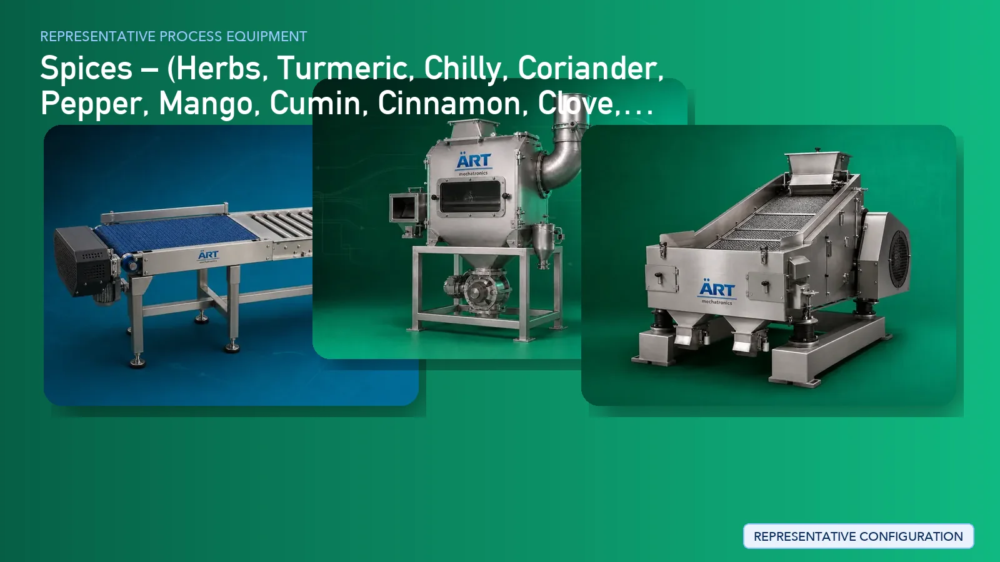

Spices Powder Processing Plant & Machinery (Turmeric, Chilli, Coriander, Pepper & Masala)
Spice powder manufacturing is a critical segment in the global food industry, covering products such as turmeric powder, chilli powder, coriander powder, black pepper powder, and blended masala spices.

About Spices Powder Processing Plant & Machinery processing
ART Mechatronics provides complete turnkey solutions for spices processing plants, delivering advanced systems for cleaning, grinding, pulverizing, blending, sieving, and packaging. Our solutions are engineered to ensure high efficiency, minimal product loss, and export-quality spice production.
Complete Spices Process Flow
Whole spices such as turmeric fingers, dried chillies, coriander seeds, black pepper, and other raw materials are received and fed into the processing line.
Spices are cleaned to remove dust, stones, metals, and impurities.
Critical for:
- Food safety
- Equipment protection
- Export-quality standards
Spices are dried to achieve ideal moisture content for grinding.
Ensures:
- Better grinding efficiency
- Longer shelf life
Different spices are ground into fine powder with controlled temperature.
Ensures:
- Fine particle size
- Color retention
- Aroma preservation
Ground powder is sieved to achieve uniform particle size.
Different spices are blended to create mixed spice powders and masalas.
Ensures:
- Uniform mixing
- Consistent flavor profile
Fine powder and spice dust are controlled using advanced systems. Systems Used:
Ensures:
- Clean environment
- Product recovery
- Food-grade processing
Final inspection ensures consistency in color, particle size, and purity.
Finished spice powders are packed into pouches, jars, or bulk bags.
Suitable for:
- Retail
- Bulk supply
- Export
Spice-Specific Processing
Turmeric Powder Processing
- Cleaning → Boiling (optional) → Drying → Grinding → Sieving 👉 Focus on color retention & curcumin quality
Chilli Powder Processing
- Cleaning → Stem cutting → Drying → Grinding → Dust control 👉 Requires strong dust extraction system
Coriander Powder Processing
- Cleaning → Drying → Grinding → Sieving 👉 Focus on aroma retention
Black Pepper Powder Processing
- Cleaning → Drying → Grinding → Fine sieving 👉 Requires controlled grinding temperature
Mixed Spice / Masala Processing
- Individual grinding → Blending → Packaging 👉 Requires precision mixing system
Machinery Required for Spices Plant
- Material Handling Systems
- Pre Cleaner
- Destoner
- Magnetic Separator
- Air Classifier
- Dryer
- Pulverizer / Grinding Machine
- Vibro Sifter
- Ribbon Blender / Paddle Mixer
- Dust Collection System
- Packaging Machines
Turnkey Spices Plant Solutions
ART Mechatronics provides complete turnkey solutions for spice manufacturing plants, including:
- Process design & plant layout
- Cleaning, grinding, and blending systems
- Dust control & air handling systems
- Packaging line integration
- Automation & control panels
- Installation & commissioning
- After-sales support
We customize solutions based on:
- Spice type
- Required fineness
- Production capacity
- Packaging format
Why Choose Art Mechatronics
- Expertise in spice grinding and powder processing
- Advanced dust control and hygiene systems
- Precision blending and mixing technology
- Minimal product loss
- Heavy-duty industrial design
- Global export capability
Machinery in a Spices Powder Processing Plant & Machinery plant
Where it's used
Get pricing & specs for the Spices Powder Processing Plant & Machinery plant
Share the product, target capacity, current process and plant location. These details help our engineers discuss the right machine or line configuration.
One partner, from design to start-up
ART Mechatronics designs, manufactures, installs and commissions your Spices Powder Processing Plant & Machinery solution with regional presence in India, UAE and Thailand.